Barksdale was a sleepy town until five in the morning, when Neet woke up. A four-pound chihuahua with Dorito-shaped ears, he considered this a generous hour for everyone else to begin work. His brother Buddy, a black dachshund-border terrier mix, preferred quiet corners and gentle pats. Ideally, both would be available much later.
Neet’s battle cry echoed through the quiet neighborhood. His owner, Heather, barely had time to open her eyes before Neet launched himself off the bed like a furry missile, landing smack in the middle of her stomach. He bounced once more to make sure she was awake.
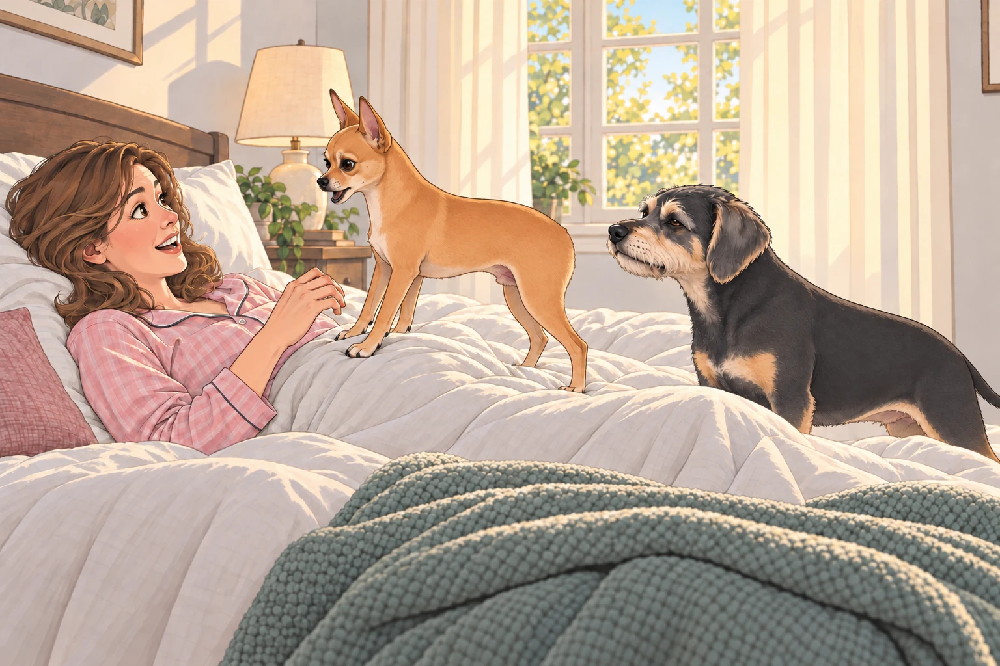
Buddy raised his head. Heather was awake. The neighbors were awake. He put his head down again, outvoted.
Heather reached for her slippers. One was beside the bed. The other was traveling down the hallway in Buddy’s mouth.
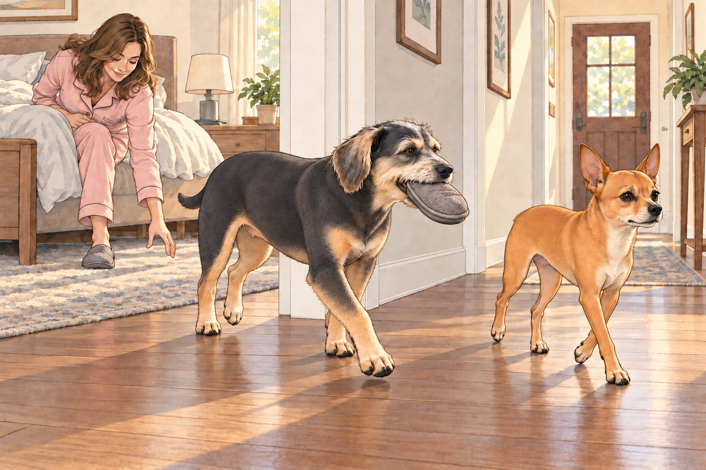
He had tried staying in bed yesterday. Neet had performed the morning inspection on him too. Today he was making arrangements.
"You need decaf, little dude," Heather groaned as she stumbled toward the coffee maker, while Neet tore around the kitchen like he was training for the Chihuahua Olympics. Buddy watched from under the dining table, where Heather’s feet offered some protection from the running. He moved the slipper across the gap beside a chair leg and tucked himself behind it.
Neet stopped to inspect the slipper.
"Occupied," Buddy said.
Neet sniffed the toe, accepted this explanation, and resumed his patrol. Buddy closed his eyes. The slipper had achieved in three seconds what Heather had been requesting for twenty minutes.
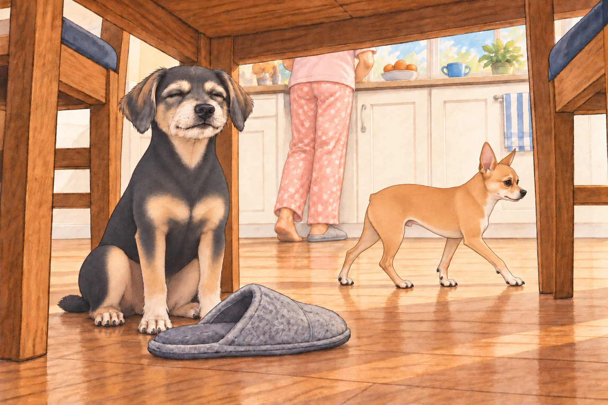
Unfortunately, the slipper belonged to someone with a cold foot.
Heather sat down with her coffee. Buddy felt her bare toes searching under the table. He pushed the slipper farther across his doorway.
"There it is."
She put her foot in it. Buddy’s entire wall stood up.
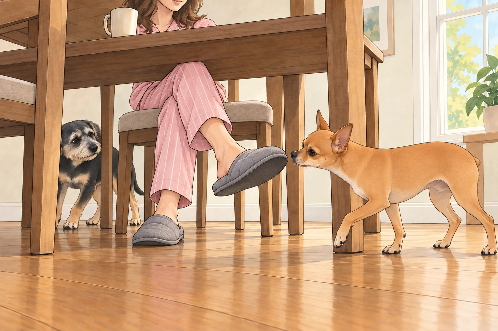
Neet bounded toward the newly opened gap. Buddy scrambled behind the next chair. Heather held out one hand, palm down, and Neet stopped long enough to lick it. She scratched his chest while Buddy squeezed past her ankle.
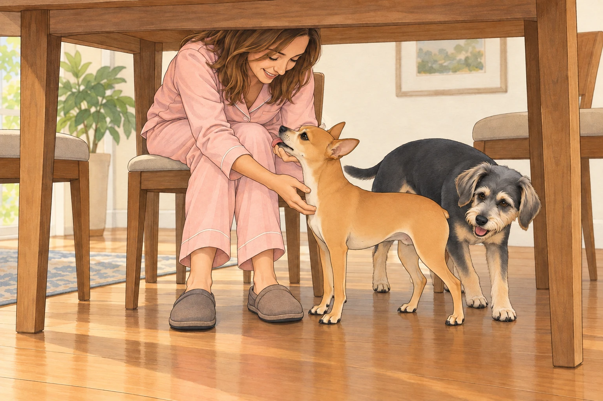
Then she rose to fetch breakfast. Buddy looked at the open doorway, the unprotected floor, and the second slipper on her other foot.
He followed her to the cupboard and leaned his shoulder against her leg.
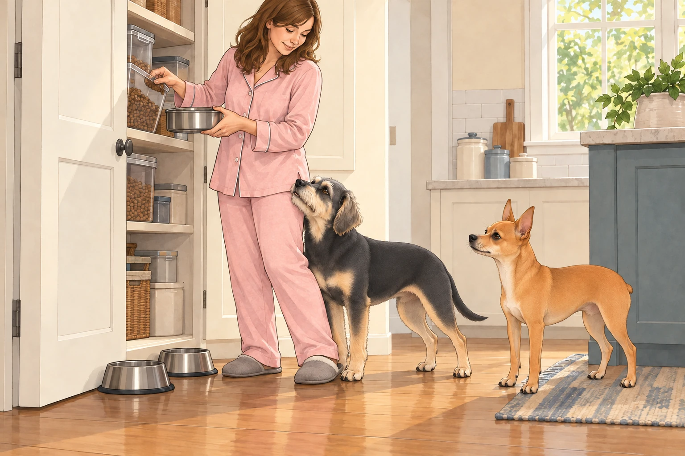
"Oh, now you want company?"
Buddy stayed there while she filled the bowls. Company had doors that opened cupboards. He was willing to reconsider.
After breakfast, Heather laid a folded towel beneath the table. Buddy stepped onto it, turned twice, and lay down. Neet came over to sniff the new arrangement.
"Also occupied."
Neet sniffed the chair leg instead.
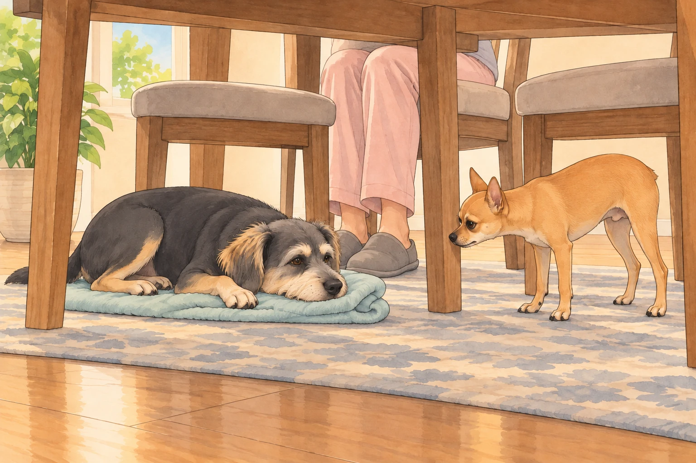
For almost an hour, the house was quiet. Heather read with one slippered foot beside Buddy’s towel. Neet dozed in a stripe of sunlight with his nose pointed at the back door, ready to take personal offense at anything that crossed it.
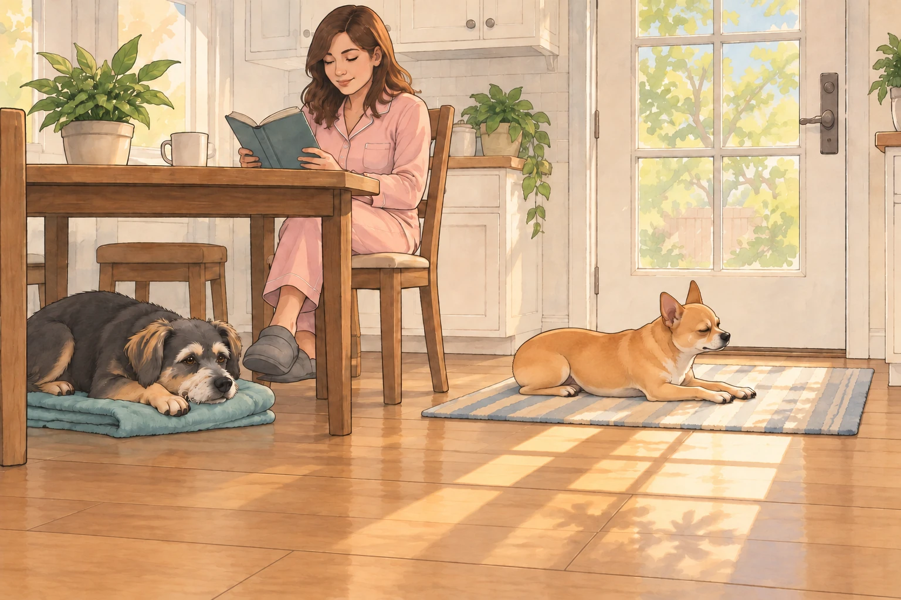
Neet’s favorite pastime was picking fights with anything that moved — or didn’t. A leaf blowing in the wind? He charged it with unflinching determination. The vacuum cleaner? His sworn enemy. Delivery drivers? They were lucky to escape with their shoelaces intact.
Today the leaf won. Neet pounced beside the door; a draft slid it beneath the gap. He checked the gap, then the floor behind him.
Buddy watched from his towel. "Outside."
"I know."
Neet checked behind himself once more.
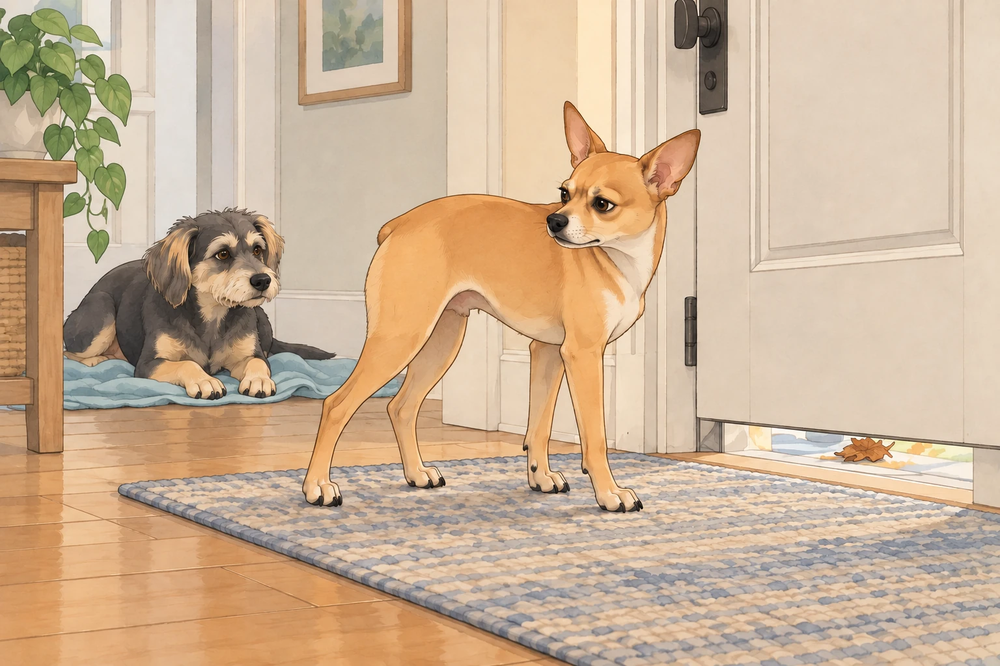
That afternoon, Heather took both dogs to Barksdale Park. Buddy stood beside the toy basket before they left. Heather picked up a squeaky toy. He stayed beside the basket. She put it down and picked up his small blue ball.
Buddy wagged.
"This one?"
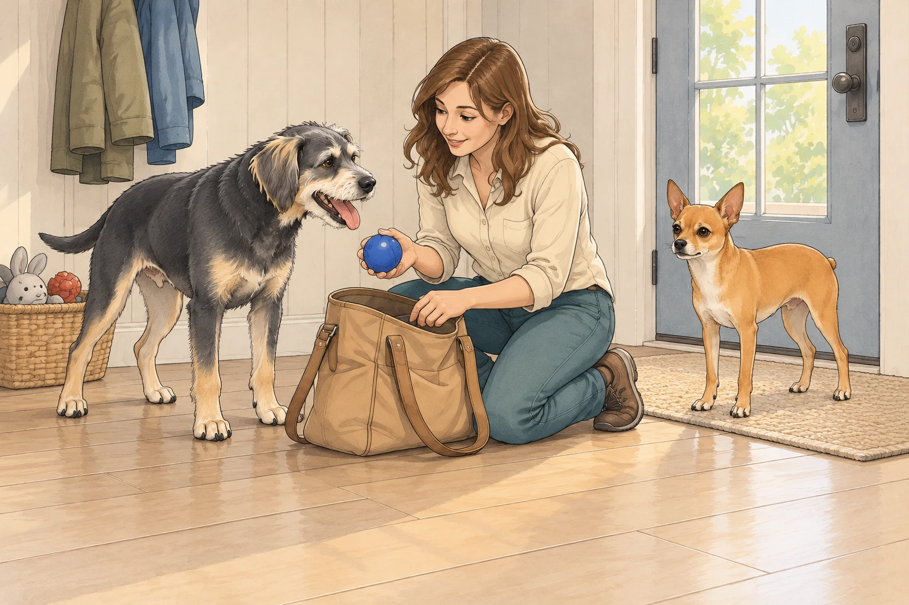
He wagged harder. She tucked it into her bag.
Neet was already waiting at the door. "We’re losing daylight."
Buddy looked at the sunshine covering half the kitchen floor. He took his time stepping over it.
At the park, Heather unclipped their leashes inside the fenced dog area.
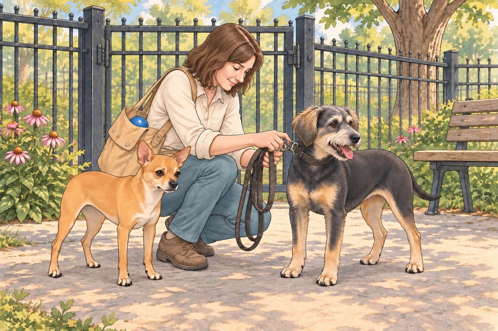
Buddy picked a path along the flowers, where he could sniff without having to introduce himself to anyone. Most of the other dogs were lounging in the sun. Buddy found a particularly interesting flower and took his time with it. For several wonderful seconds, nobody needed rescuing.
Heather sat on a bench and rolled his ball a little way along the grass. Buddy trotted after it, carried it back, and dropped it at her shoes. She rolled it again. No shouting, no squeaking, no urgent announcements. He had chosen very well.
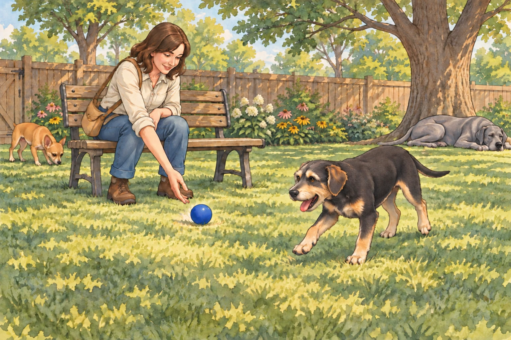
On the third roll, the ball bumped a root and veered toward a towering Great Dane resting in the shade.
Max was known for his gentle nature. He put one enormous paw out and stopped the ball before it could reach a muddy patch.
Buddy halted. His ball looked much smaller beside that paw.
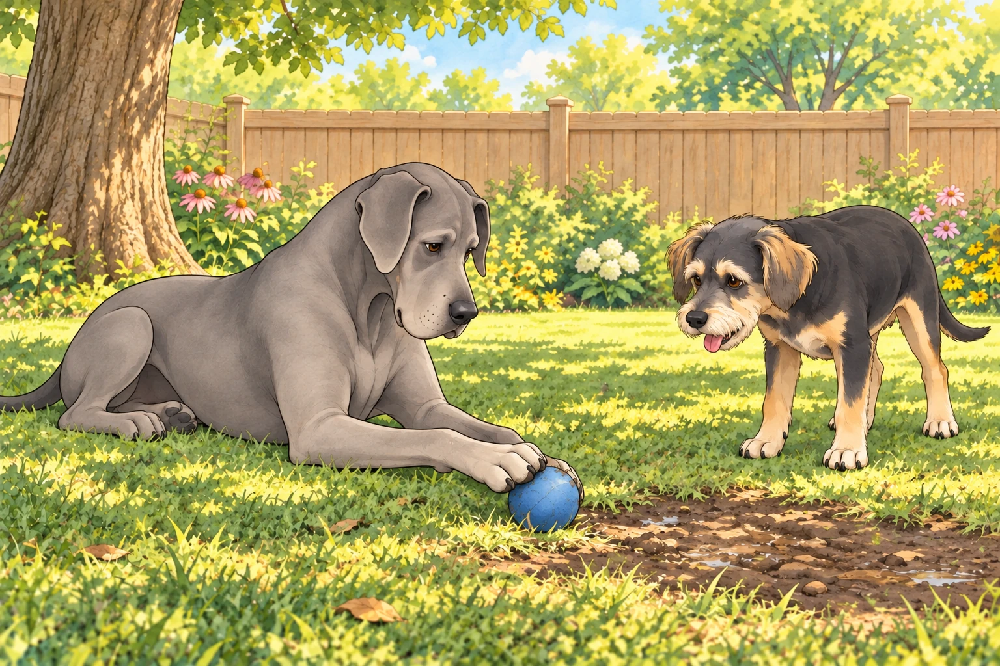
"Yours?" Max asked.
Buddy nodded, then took a step forward. Max moved his paw away. Buddy stretched his neck, retrieved the ball, and backed up before the rest of Max might decide to move.
"We could play," Buddy offered.
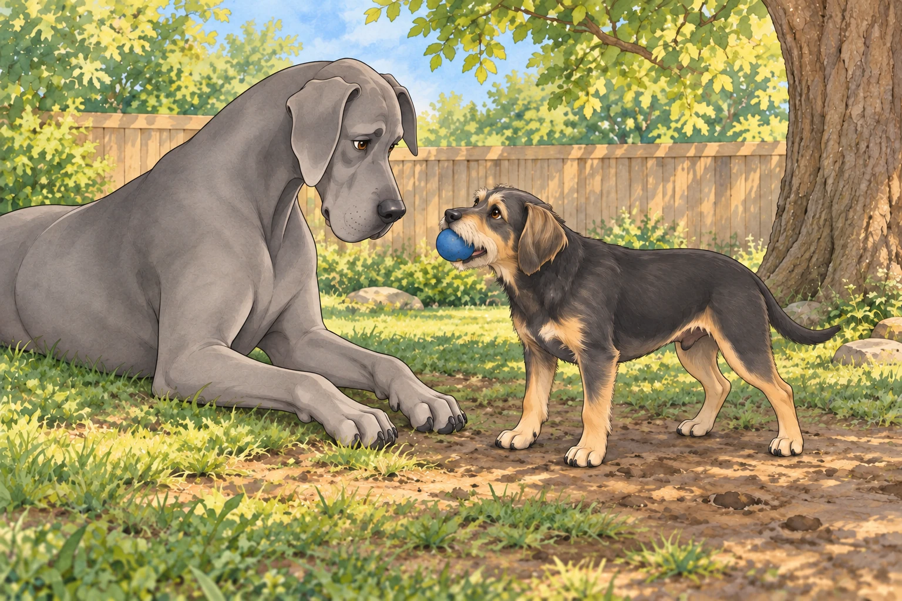
He had not meant to say it. But Max had been careful with the ball, and he was lying in excellent shade.
Max rose slowly. Buddy retreated two more steps, reconsidering the size of the game he had proposed.
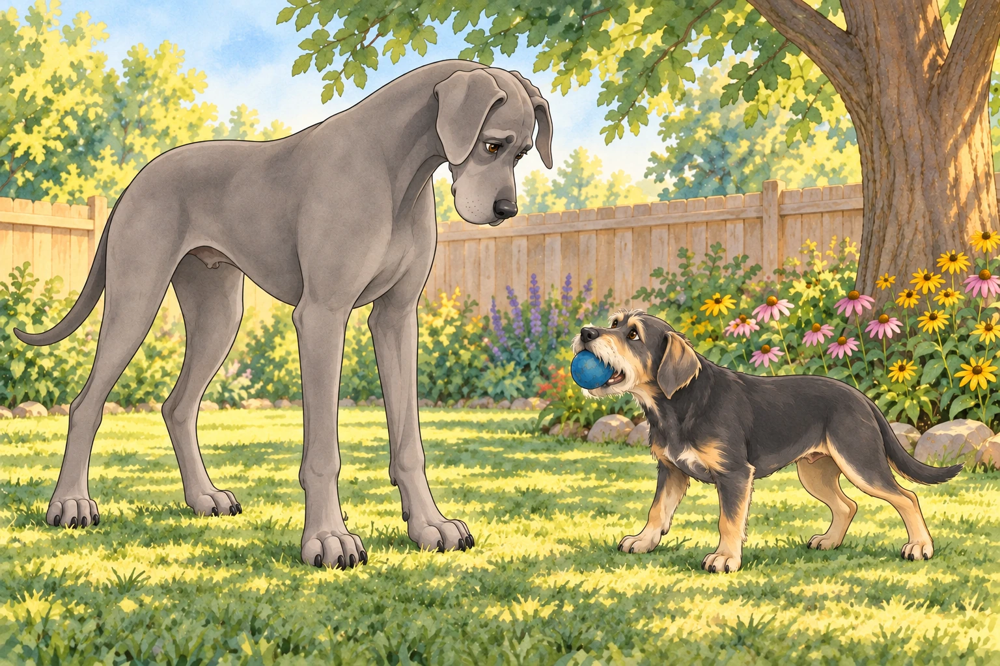
He put the ball beside the flowers and bent to sniff the one he had missed. Perhaps they could begin with something they were both good at.
Neet spotted him.
Without hesitation, Neet charged like a wind-up toy gone rogue. Max stared down, puzzled by the vibrating bundle of rage yapping at his ankles. He lifted one enormous paw to see whether he had accidentally stood on something.
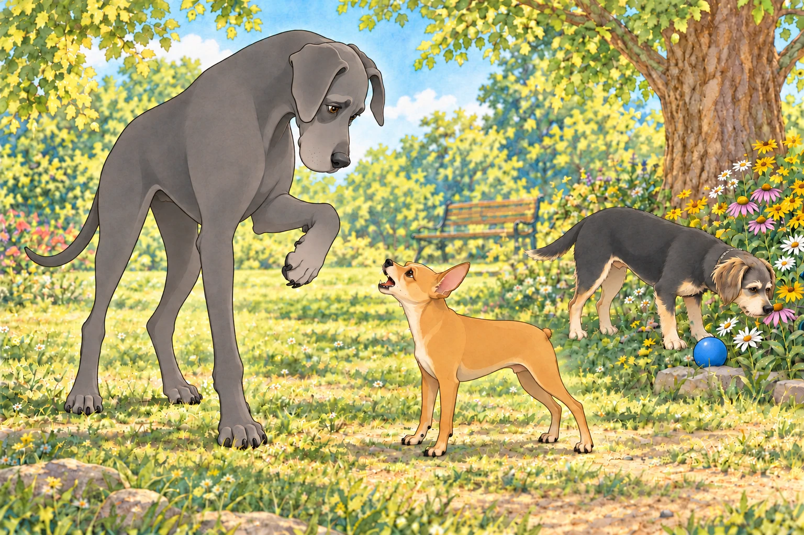
Buddy left the flower. There went several wonderful seconds.
"Easy, buddy," Max said in his deep, rumbly voice. "I don’t want any trouble."
"Trouble found YOU, big guy!" Neet snarled, bouncing on his back legs like a hyperactive kangaroo.
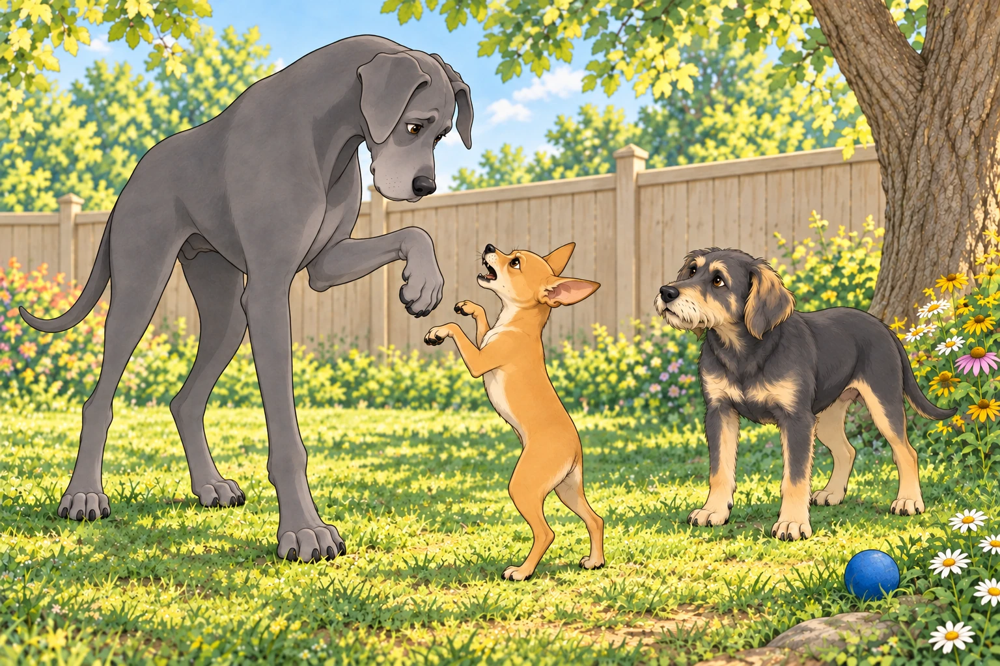
Max set his paw down somewhere else. Neet followed it.
"Both feet, then?" Max asked.
"He stopped my ball," Buddy said.
Neet wheeled around. "He did WHAT?"
"Before it went in the mud."
Neet faced Max again, searching for a suitable charge. Max waited. Buddy picked up his ball, then put it down because he still needed his mouth.
"I asked him to play."
"Without me?"
Buddy blinked. Neet’s ears stayed high, but his next bark did not come.
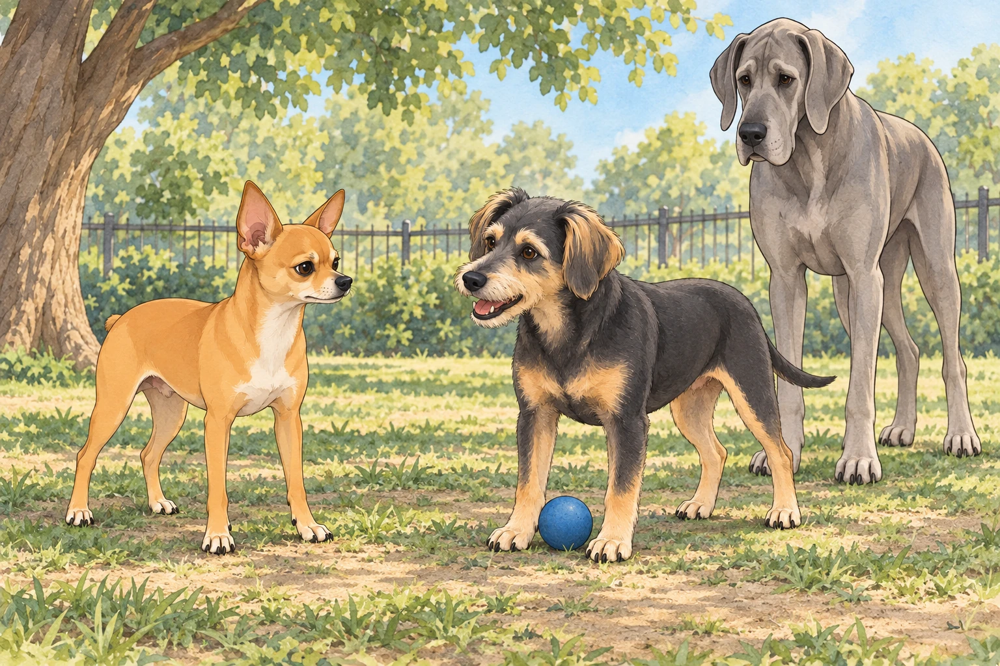
"You were busy with a leaf."
"That was surveillance."
Before Neet could widen the investigation, Heather scooped him up. Buddy gave a concerned whine, checked that Max’s other feet were staying where they were, and followed Heather out of his shade.
"Sorry, Max," she said, rubbing Neet’s chest as he wriggled.
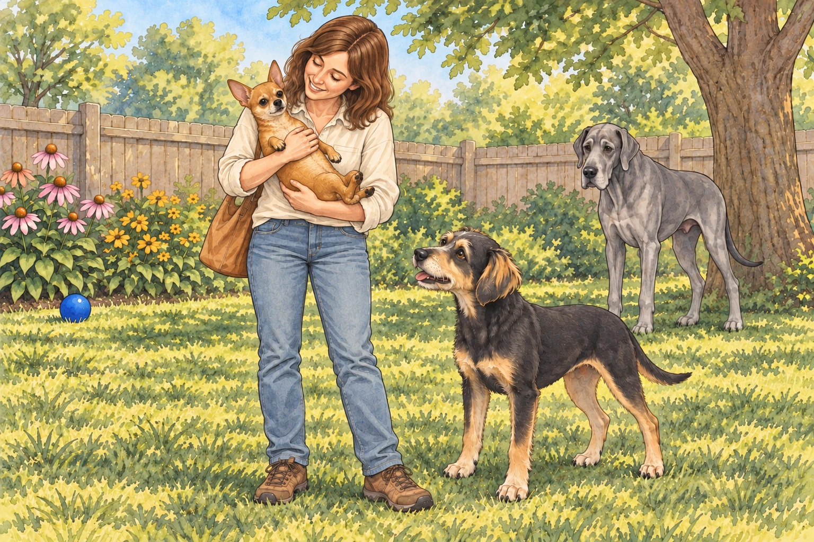
"Somebody’s had a long day."
It was not yet three o’clock.
Heather sat back on the bench with Neet in her lap. Buddy’s ball was still near the flowers. He looked from it to the gate. If they left now, the ball and the afternoon would both remain behind.
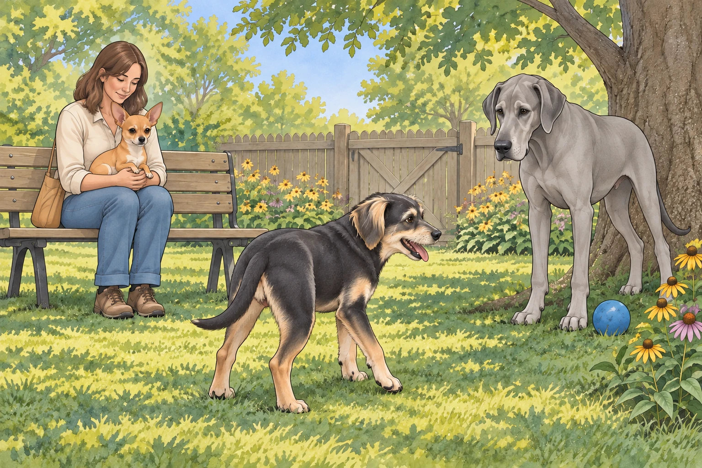
He walked back toward Max.
His feet wanted to hurry. He made them go slowly. Max lowered his head to watch, which brought rather a lot of dog closer to Buddy.
Buddy picked up the ball.
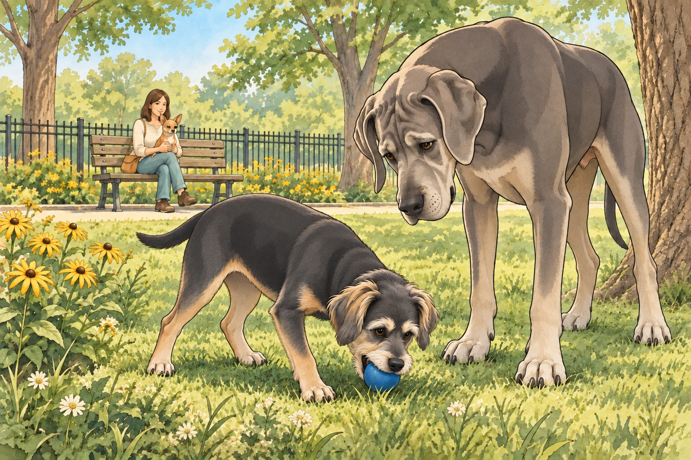
"Next time?" Max asked.
Buddy wagged around the ball in his mouth. Then he carried it to Heather and dropped it at her shoes again.
Heather glanced at the gate, then at Buddy. She kept Neet on her lap and rolled the ball along the clear patch beside the bench.
Buddy fetched it. Once. Twice. Max settled back into his shade.
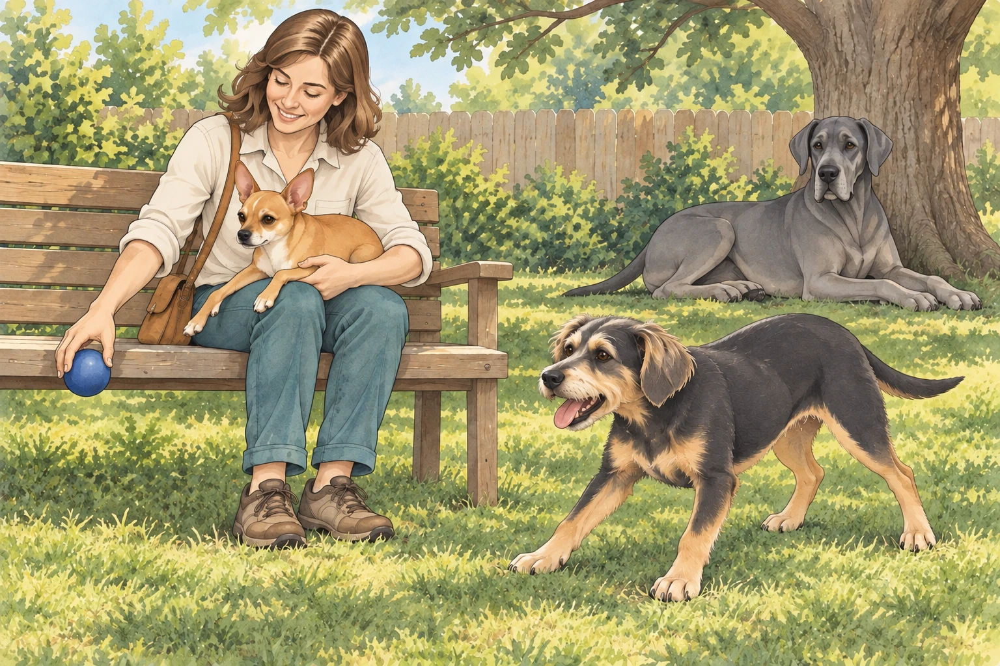
Neet watched the third roll.
"I could have stopped it."
"It’s supposed to move," Buddy said.
Heather let Neet down beside her shoes. Buddy put the ball in front of him. Neet sniffed it, looked toward Max, then nudged it with his nose.
It traveled a few inches.
Buddy nudged it back. Neet pounced on it with both front paws.
"Stopped it."
Buddy sat down. This might need work.
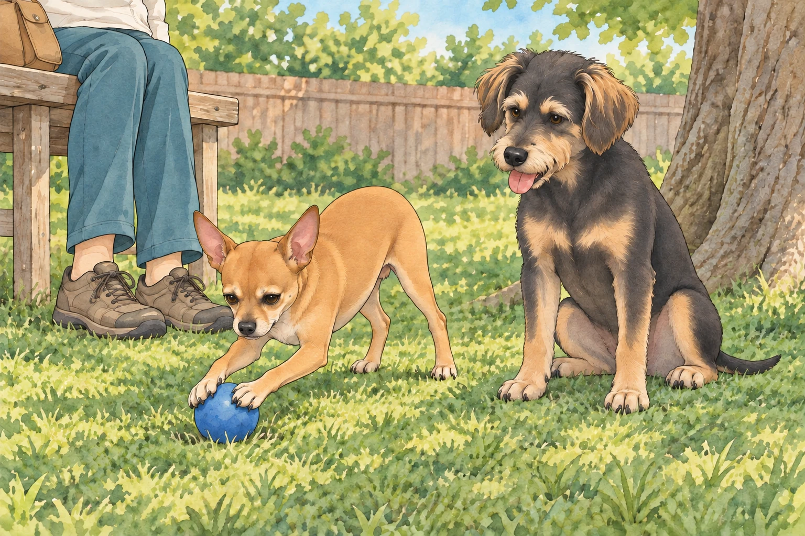
When they finally left, Heather clipped Buddy’s leash back on and carried Neet home under her arm like a furry handbag, muttering, "You’ve got the heart of a lion and the size of a sandwich."
Neet strained forward from under her arm. Buddy walked beside her, enjoying the first patrol of the day that came with a handle. His ball rode in Heather’s bag.
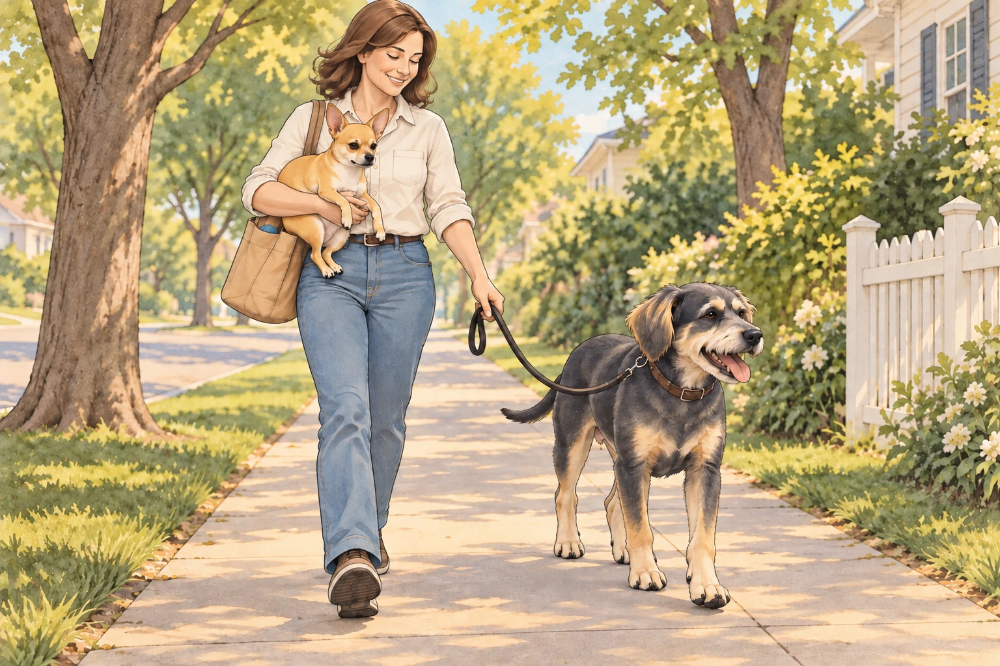
He could smell its familiar rubber each time the bag swung toward him.
But Neet was unfazed. As soon as they got home, he spotted his arch-nemesis: the garden gnome in the backyard. Heather set him down and unclipped Buddy’s leash at the back door.
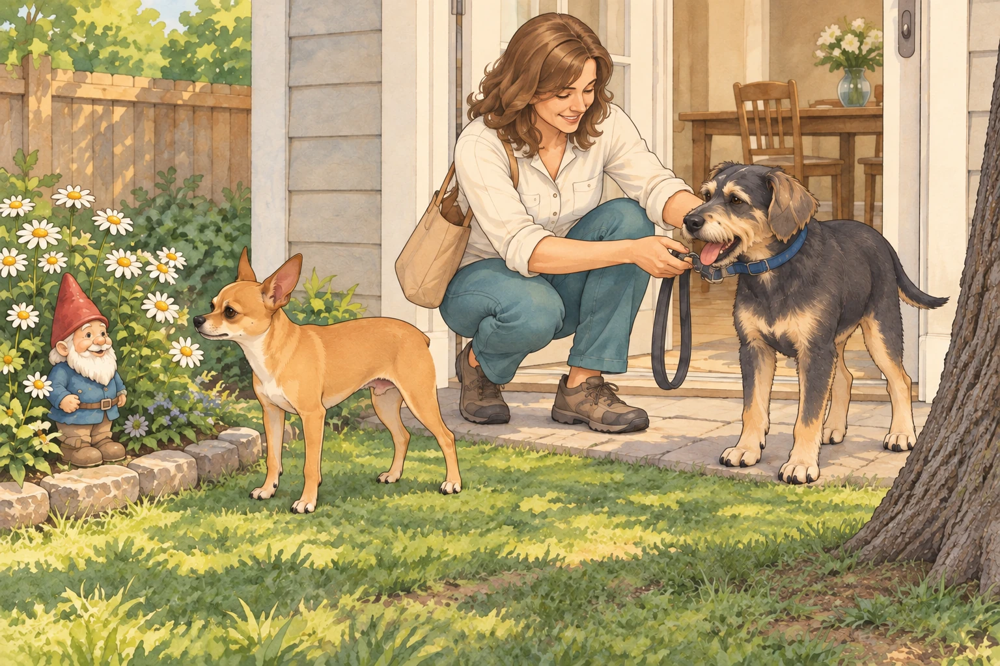
With a triumphant yip, Neet launched into his signature battle stance.
Heather set Buddy’s ball on the grass before going inside. Buddy considered taking it straight to his quiet corner. Then he padded up behind Neet and offered one tentative bark. The gnome had already survived the first twenty; perhaps it would listen to a different voice.
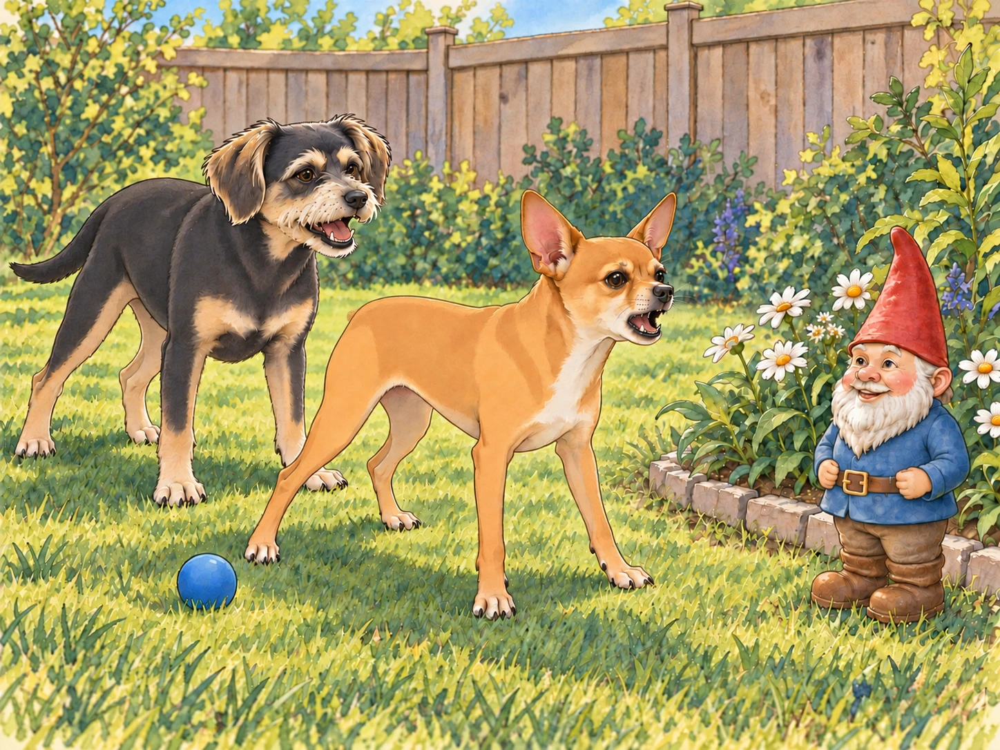
The gnome smiled on. Neet planted his feet. Buddy sat down beside him; this might take a while.
"Did you hear that?" Neet asked.
Buddy listened. A bird chirped in the hedge.
"No."
"Exactly. He won’t answer."
Buddy looked at the gnome’s fixed little mouth. He looked at Neet’s working one.
Then he got his ball.
He set it down beside Neet and gave it a gentle nudge. It rolled past the gnome’s boots.
Neet darted forward to stop it. For one hopeful moment, Buddy thought they were playing.
Neet planted his paw on the ball and stared up at the gnome.
"You saw that."
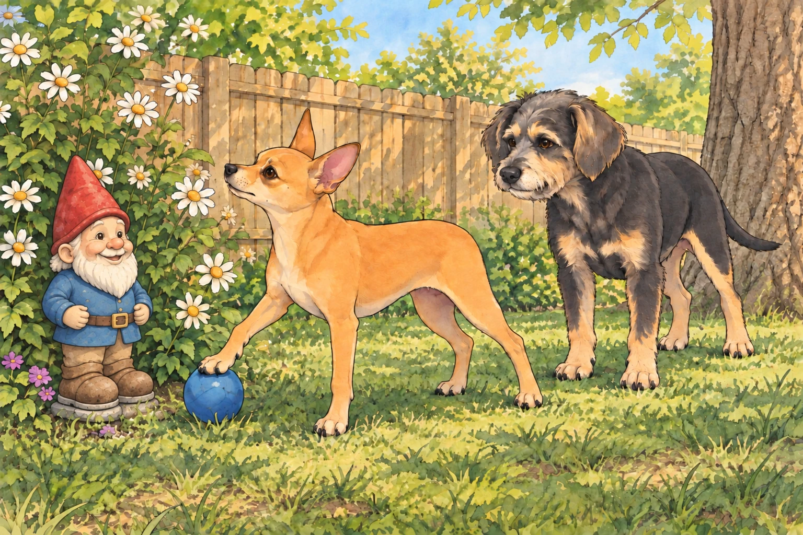
Buddy sighed. He went around Neet, took the ball when the paw lifted, and lay down in the grass. Neet could have his audience. Buddy kept his toy.
Heather opened the back door. "Anybody coming in?"
Buddy got up at once. Then he looked back. Neet was still waiting for the gnome to apologize.
Buddy carried his ball to the doorway. Heather held the door for him. The towel waited under the table; he could see one corner of it from here.
He put the ball just inside, turned, and went back.
He touched his nose to Neet’s shoulder and set off again.
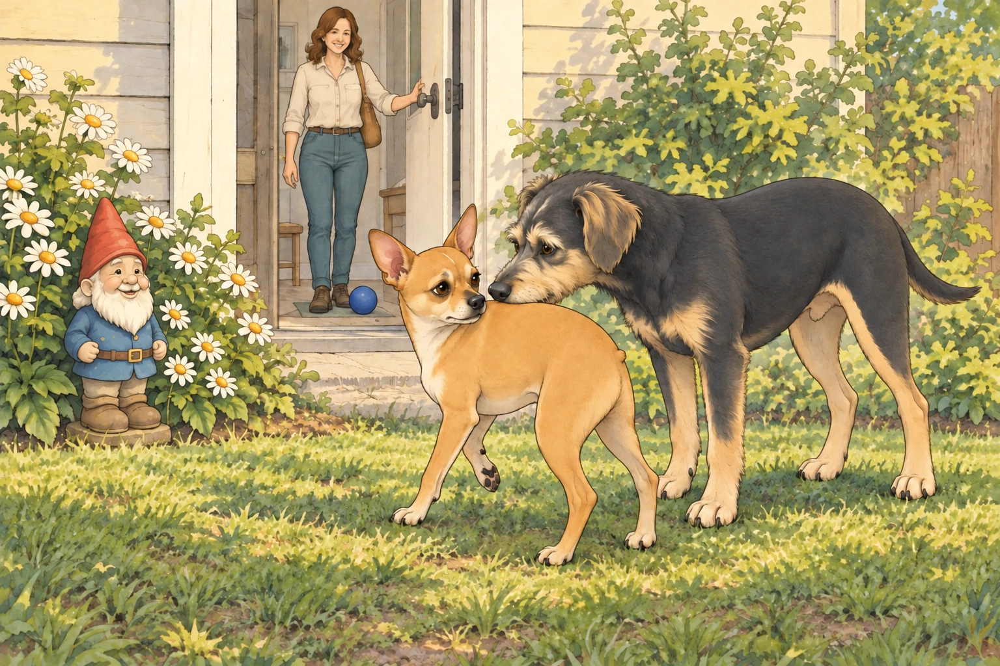
This time Neet followed, keeping one eye on the flower bed.
Heather waited until both dogs were through before closing the door. She knelt to brush a grass seed from Buddy’s beard, then rubbed behind Neet’s ears.
"There. Everybody accounted for."
Neet leaned into her hand. Buddy picked up his ball.
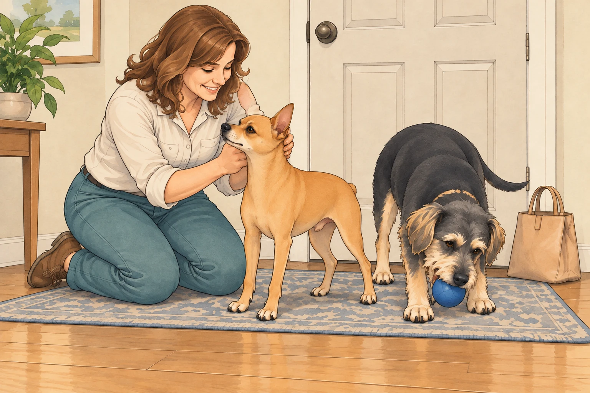
Inside, Buddy settled behind Heather’s slipper, which she had left beside his towel. Neet squeezed in beside him.
Buddy shifted over. Apparently it was a two-dog slipper.
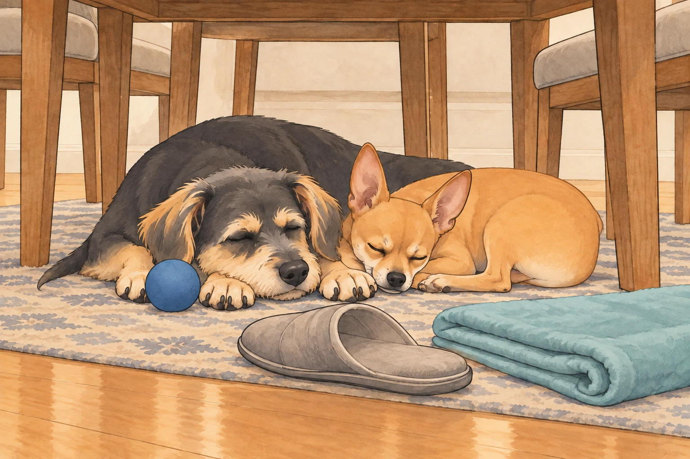